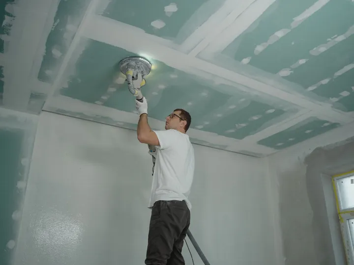
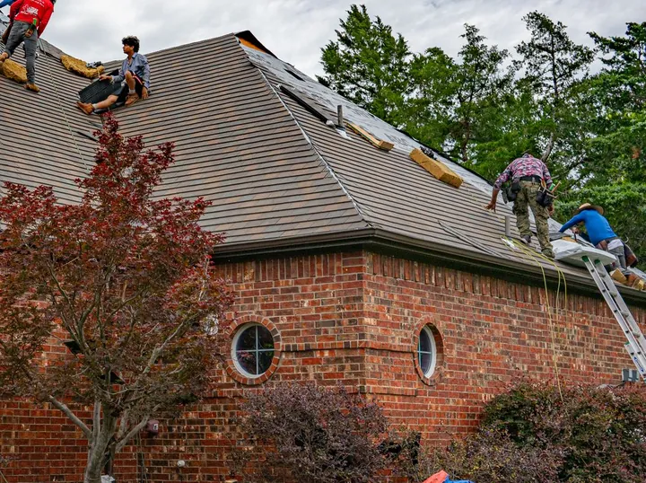
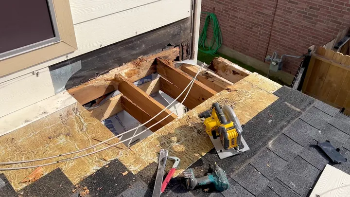
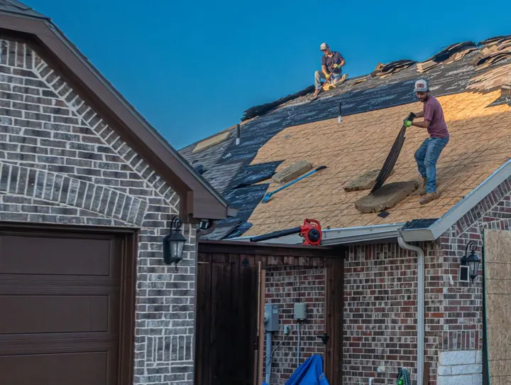
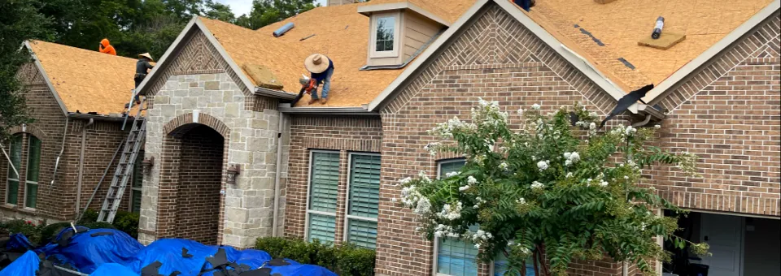
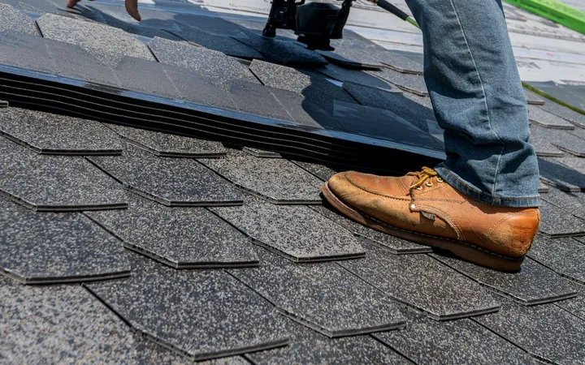
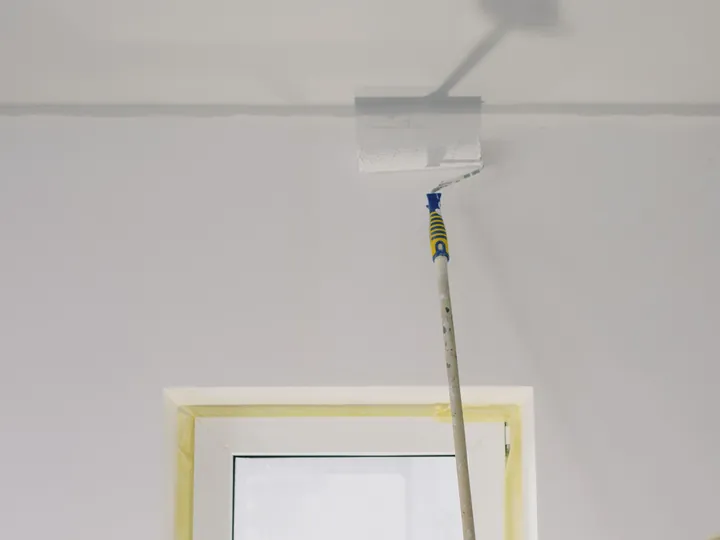
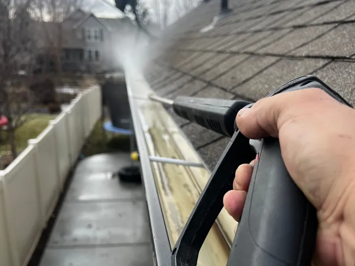
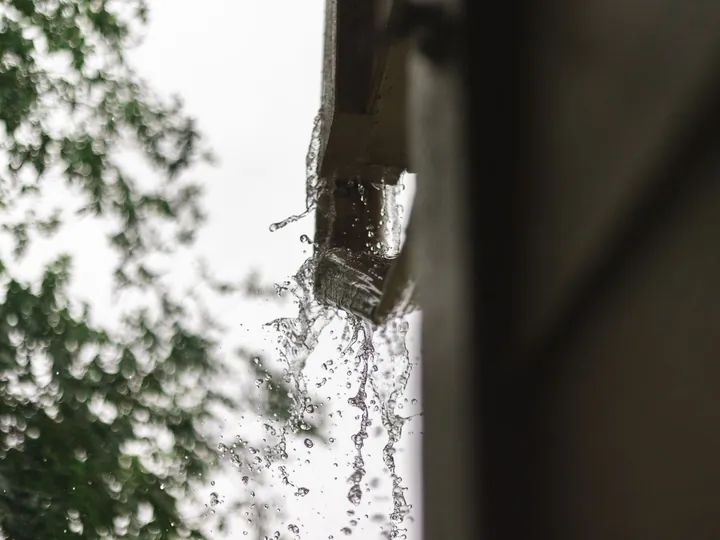

Note 03-A
Drywall
Water-stained or soft drywall cut out, replaced, taped and finished once the roof above is sorted.
Entry 01East Houston 77029Roof repair
Roof repairs, new roofs, leak and shingle repair and rotten decking, plus drywall, painting and power washing, for homes on Houston's east side.
5.0stars on GoogleJ&J photo · new decking going down
Entry 02The job, step by step
A roof repair reads like a field log. Five entries, from the first look to the last nail picked out of the grass.
From the ground up: what the shingles show, where water is getting in and how the decking feels underfoot. Reviewers on Google mention the inspection and a thorough job.

Bad spots get opened, not patched over from the top. Old shingles and felt come off so the wood underneath can be seen, and the scope is a fact rather than a guess.


Soft or rotten decking is cut out and replaced, the new boards are fastened down, and only then does the roof take a new layer.

Leak and shingle repair read from the other side: find where the water got in, replace what failed, fasten what lifts and seal around vents and pipes.

Torn-off material, nails and scraps come off the roof and out of the yard. Reviewers mention punctuality and the before-and-after pictures they were sent.
Water on the ceiling? Text a photo of the stain and the roof from the ground to (346) 276-3350.
Text the photosEntry 03More than roofs
A leak rarely stops at the shingles. Three more jobs on the J&J list, for the stain on the ceiling and the grime on the gutters.

Water-stained or soft drywall cut out, replaced, taped and finished once the roof above is sorted.

Ceilings and walls painted after the repair, so the room looks like nothing ever came through it.

Gutters, siding, driveways and walkways washed down with a pressure washer.
Entry 04After Beryl
Reviewers on Google mention J&J's Hurricane Beryl repairs, and the before-and-after pictures that came with them.
If a storm has left your roof looking different from the street, send photos and describe what you see.

Entry 05On Google
The topics that come up in J&J's Google reviews, checked off like a job list.
Entry 06Questions
Move people and belongings away from the drip, catch the water in a bucket and take photos of the ceiling. Stay off a wet roof. Then call or text (346) 276-3350 with the photos and say where the water is coming in.
Only if it can be done safely, in dry weather and with someone holding the ladder. Never climb onto a wet or storm-damaged roof. A tarp is only a short-term cover; describe what you see when you call and ask what makes sense for your roof.
A wide shot of the roof from the street or yard, close-ups of any missing or lifted shingles, the ceiling or wall stain inside, and the attic if you can reach it safely. Phone photos are fine.
Yes. Drywall and painting and power washing are listed alongside roof repairs and new roofs, so a water-stained ceiling can be part of the same conversation.
Call or text (346) 276-3350, or send the details with the email form below. Include your ZIP code, what you are seeing and a few photos.
Entry 07Open a job ticket
Call or text with what you are seeing: a drip, a stain, missing shingles or a soft spot. Photos help.
(346) 276-3350